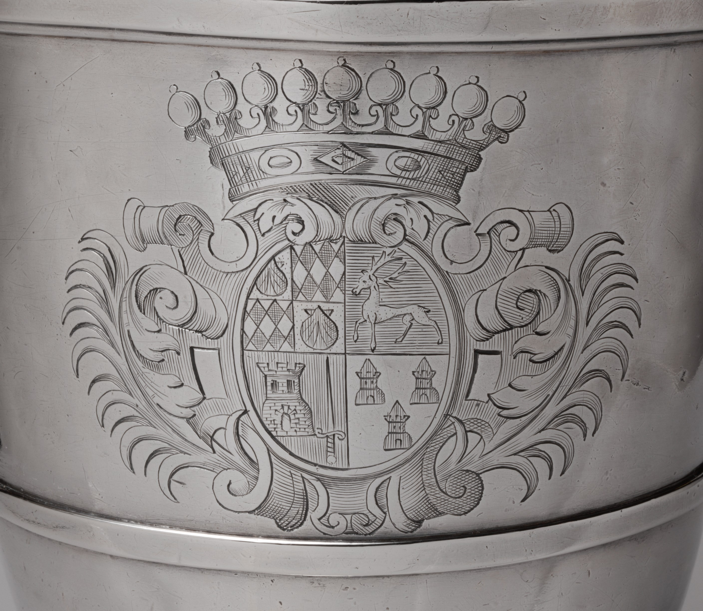

Within the dates
A nearby ewer falls inside the dishes' date span. Its shield is another.
The dish centers are equal 480 × 480 source-pixel windows. The ewer is a separate Met detail photograph. They share a display width, not a physical scale.



The Met dates both dishes 1697–1704. Its attributed ewer falls within that span, at 1698–99, and the title identifies its arms with Jérôme de Lestang (1676–1700) and Marie Le Floch (1680–1734). Its quartered shield differs from the device repeated on the dishes.
All three objects carry the Wentworth bequest credit line, but the records do not connect the ewer to the dishes or name the dishes' arms. I compared the other date-near silver images returned by the Met's "Coat of Arms" search; none I checked repeats this device. Here, a shared date makes a wider field of comparison, not a family identification. The source images are Public Domain.